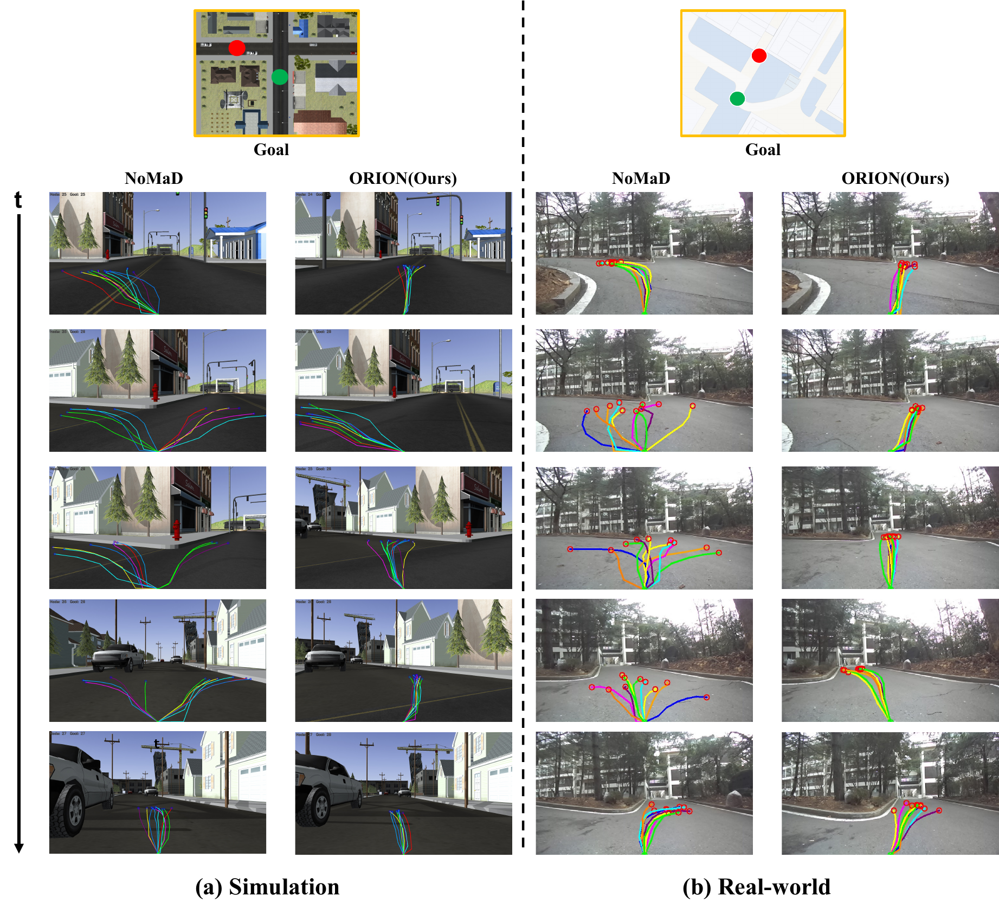
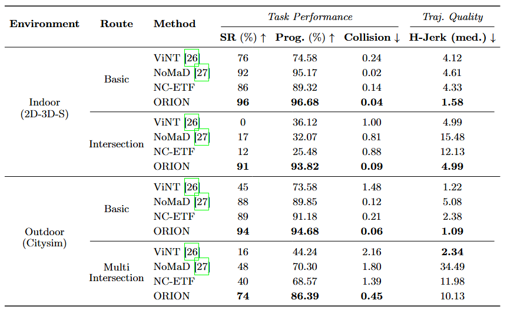
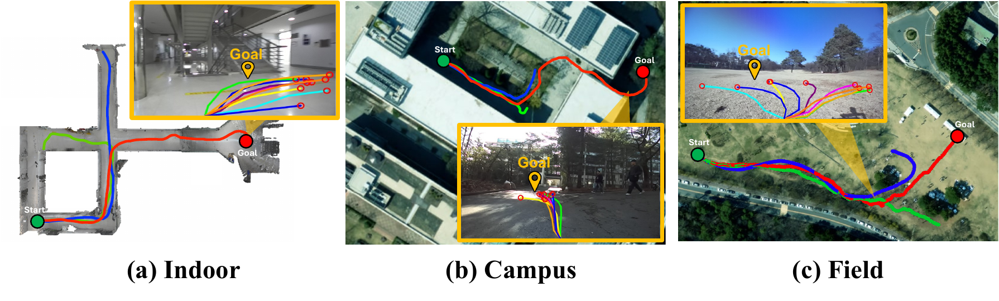

1Seoul National University
*Equal contribution · †Corresponding author
TL;DR ORION structures the visual encoder's feature space along the ordinal axis of ego-centric navigation actions (Far Left → Far Right), giving a diffusion navigation policy that acts far more consistently at ambiguous decision points such as multi-way intersections.
Learning robust navigation policies directly from visual observations remains a fundamental challenge in vision-based robotic navigation. In end-to-end imitation learning approaches, the visual encoder and action decoder are jointly optimized using a single action loss, which provides only an indirect supervisory signal to the encoder. This indirect supervision frequently results in the encoder learning ambiguous, action-agnostic representations. The problem is further complicated by substantial variations in scene structure and appearance across diverse environments, as well as the prevalence of visual distractors inherent to real-world navigation settings. Such action-agnostic features cause the navigation policy to produce inconsistent actions at ambiguous decision points, leading to navigation failure.
To overcome these limitations, we propose ORION (Ordinal Neural Collapse for Visual Navigation), a method that explicitly organizes the encoder's representation space according to the ordinal structure of navigation actions. In the context of goal-directed navigation, ego-centric control categories from Far Left to Far Right exhibit a natural ordinal relationship in which neighboring classes share similar visual contexts, while semantically opposing classes differ substantially in appearance. We encourage class representations to be arranged sequentially along a single discriminative axis, while suppressing off-axis variance within each class. The pretrained encoder is then integrated into a diffusion-based navigation framework, and the full pipeline is fine-tuned end-to-end.
Extensive experiments in both simulation and real-world settings show that ORION consistently outperforms end-to-end and neural collapse baselines in navigation success rate and goal progress, with notable gains in visually challenging scenarios such as complex multi-way intersections.
The ordinal neural collapse objective arranges the per-class feature means as equally spaced points along a single axis, ordered by the navigation action they correspond to, while collapsing within-class features toward their mean. The geometry of the representation space is thereby forced to mirror the geometry of the action space. The pretrained encoder is then integrated into a diffusion navigation policy and fine-tuned end-to-end — see the two-stage pipeline above.
Across simulation and real-world benchmarks, ORION improves navigation success rate and goal progress over both end-to-end imitation learning (ViNT, NoMaD) and a neural-collapse baseline (NC-ETF), with the largest gains in visually challenging, ambiguous scenes.

Qualitative rollouts over time (top → bottom). At ambiguous intersections the baseline NoMaD produces scattered, inconsistent action candidates, whereas ORION keeps them tightly concentrated toward the correct direction — in both (a) simulation and (b) real-world settings.
On the Citysim Multi-Intersection route ORION reaches 74% success versus 48% for NoMaD, and on the Indoor Intersection route it jumps from 17% to 91% — while cutting heading jerk by 71% at intersections, reflecting far more temporally consistent actions.

Table 1. Navigation performance in simulated environments (Indoor 2D-3D-S, Outdoor Gazebo Citysim). Best result per route in bold.
Deployed on a Clearpath Husky with onboard inference, ORION performs goal-directed navigation across three unseen real-world environments with varied scene structure and visual distractors.

Real-world deployment. Goal-directed navigation across (a) indoor, (b) campus, and (c) field environments; the red path is ORION reaching the goal from the green start.
@article{son2026ordinal,
title={Ordinal Neural Collapse as a Representation Prior for Visual Navigation},
author={Son, E-In and Kim, Jung-Taak and Seo, Seung-Woo},
journal={arXiv preprint arXiv:2606.26839},
year={2026}
}